使い方
お店のレシピ・マニュアル・コーヒーの知識を、スマホで見たり作ったりできるアプリの説明書です。
画面の写真は、お試し用のデータで撮ったものです。
はじめる
用意するもの
- iPhone（iOS 16 以上。iPhone 8 から使えます）
- iCloud へのサインイン（いつもの Apple ID でOK）
- Wi-Fi か電波がつながる場所
-
アプリを入れる
アプリのリンクは、お店のスタッフの LINE グループで送ります。リンクを iPhone で開いて、App Store の「入手」を押してください。無料です。
App Store で検索しても出てきません。リンクから入れてください。
-
iCloud にサインインしているか確かめる
アプリを開いて「iCloud にサインインしてください」と出たら、iPhone の「設定」アプリのいちばん上から iCloud にサインインして、もう一度アプリを開きます。
この画面が出なければ、次へ進んでください。
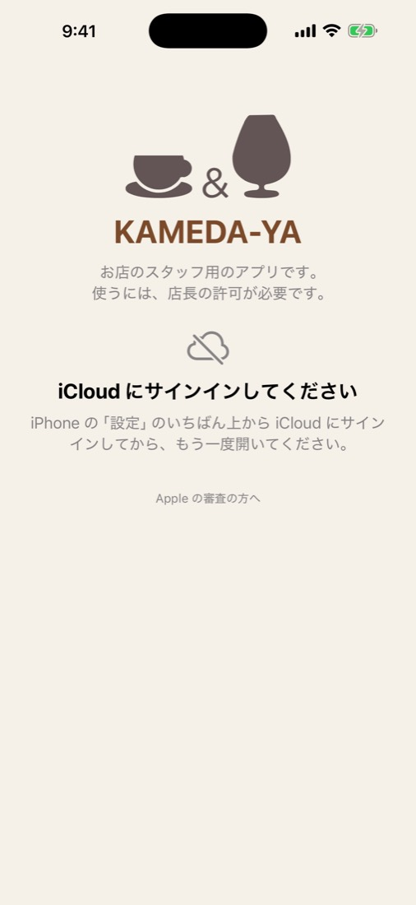
-
ニックネームを入れて申請する
お店で呼ばれている名前を入れて「利用を申請する」を押します。
本名（名字と名前）は入れないでください。10文字まで、あとから直せます。レシピを保存したとき「最後に保存した人」として出ます。
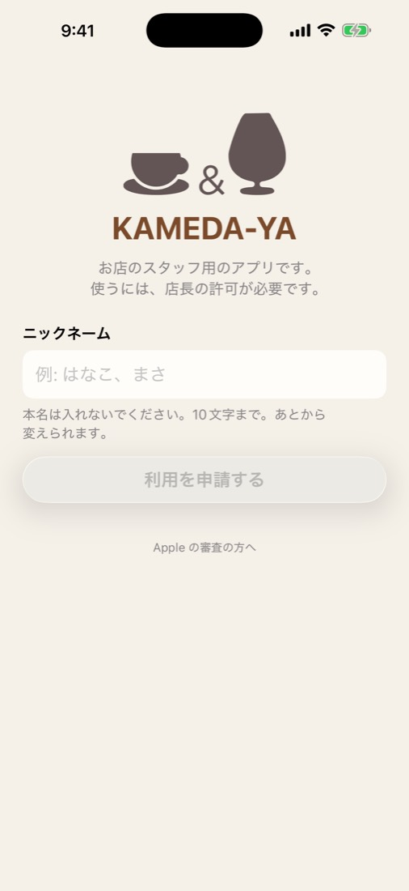
-
許可を待つ
「申請しました」と出たら、管理者（お店でアプリを管理しているスタッフ）の許可を待ちます。許可されると、自動でレシピの画面に変わります。
なかなか変わらないときは「許可されたか確かめる」を押してください。
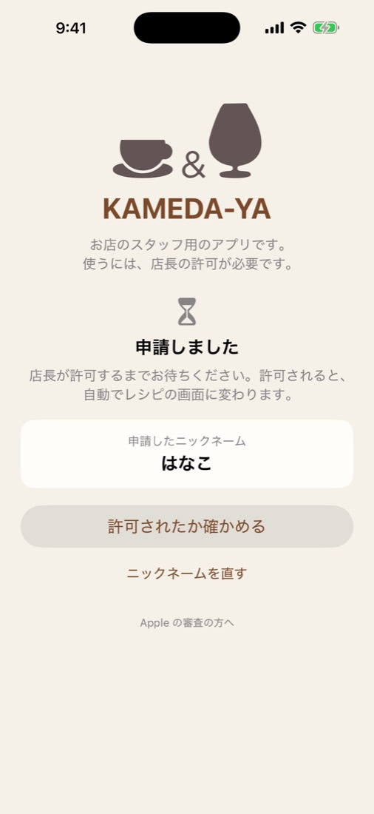
「作れる人」と「見るだけの人」
許可するときに、管理者がどちらかを決めます。「見るだけの人」には、作る・直す・消すボタンが出ません。作りたくなったら管理者に伝えてください。
画面の見かた
いちばん下のタブで切り替えます。
| タブ | できること |
|---|---|
| レシピ | メニューのレシピを探す・見る・作る |
| マニュアル | 立ち上げ・営業中・締めの作業の手順を見る・作る |
| コーヒー | 淹れ方・豆・基礎知識を見る |
| 管理 | 下書き・アーカイブ・ゴミ箱・カテゴリの整理、ニックネームの変更、要望の送信 |
レシピを探す
レシピはカテゴリ（ドリンク・ランチメニュー・パン・おやつなど）ごとに並んでいます。
- 上の検索欄にメニュー名か材料名を入れると、すぐに絞り込めます。ひらがな・カタカナ、全角・半角の違いは気にしなくて大丈夫です。
- カテゴリのボタン（「ドリンク」など）を押すと、そのカテゴリだけになります。
- 「★お気に入り」を押すと、お気に入りに入れたレシピだけになります。
- 右上の □ が4つのボタンで、写真を大きく並べる表示に切り替えられます。
- 一覧を下に引っ張ると、最新の内容を読み込みます。
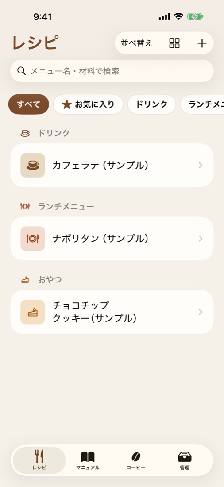
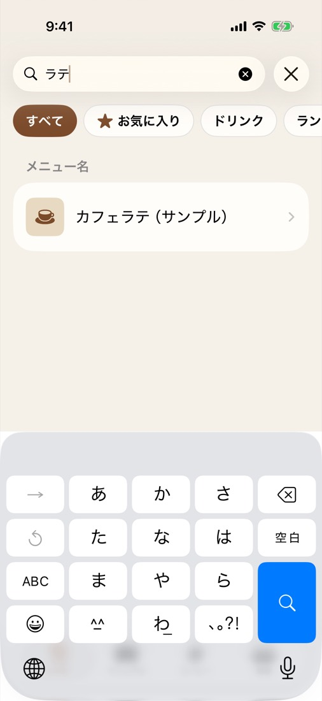
レシピを見る
- 材料の倍率: ×1/2・×1・×1.5・×2 を押すと、分量が計算されて出ます。下の小さい字の「もと」が、元の分量です。
- ☆ のボタンを押すと、お気に入りに入ります。お気に入りは自分だけのもので、ほかの人には見えません。
- 手順の注釈（電球のマーク）に、気をつけることが書いてあります。
- レシピを開いている間は、画面が暗くなりません。
- いちばん下に、最後に保存した人と日時が出ます。
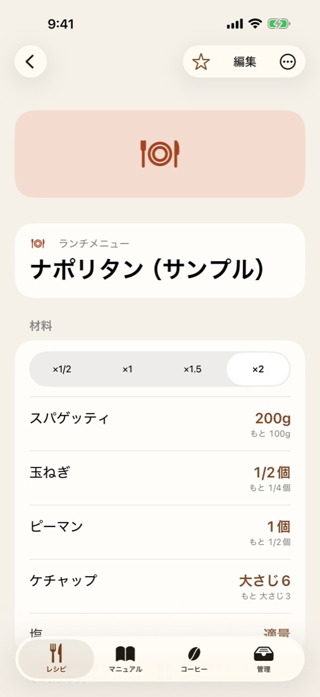
調理モード
手順の見出しの下の「調理モードで見る」を押すと、手順が1つずつ大きく出ます。作りながら見るときに便利です。
- 左右にスワイプするか、「前へ」「次へ」で進みます。
- 右上の「材料」で、材料を下半分に出せます（選んでいる倍率のまま）。
- 手順の中の時間（⏱ と下線の付いた「15分」など）を押すと、タイマーが動きます。通知を許可しておくと、アプリを閉じていても時間になったら知らせます。
手順の文の中の分量は、倍率を変えても ×1 のままです。分量は材料のほうを見てください。
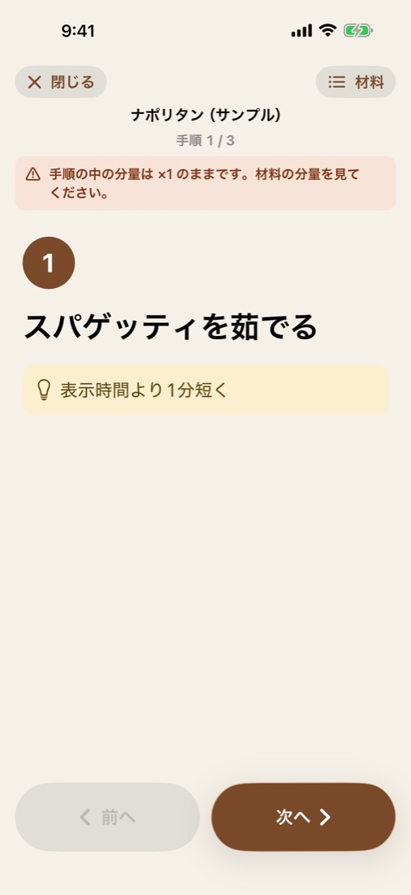
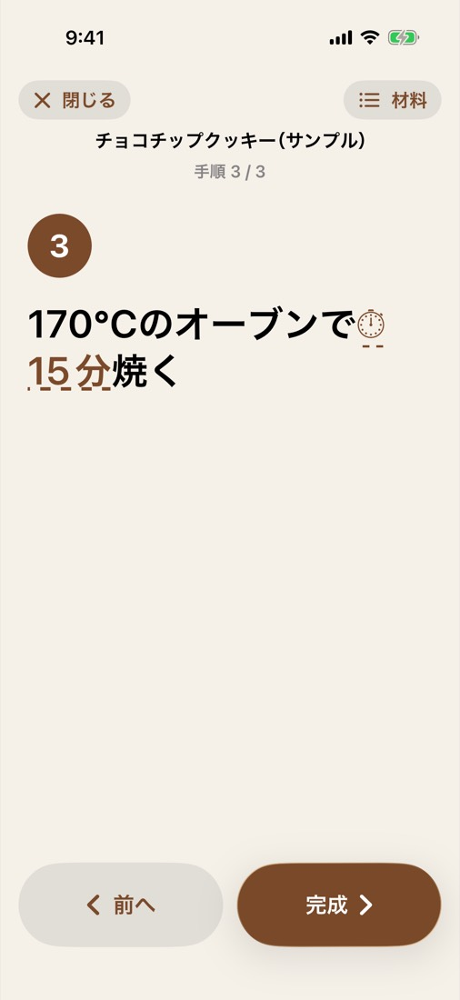
レシピを作る・直す
「作れる人」だけができます。
新しく作る: レシピの一覧の右上の「＋」を押します。
- 写真から読み取る: 紙のレシピを撮ると、文字を読み取って材料・手順の欄に入れます。
- 完成写真を追加: その場で撮るか、写真アプリから選びます。手順ごとに写真を付けることもできます（手順の横のカメラのマーク）。人の顔が写らないようにしてください。
- 材料名は、入れ始めるとよく使う名前が候補に出ます。分量は「100g」「大さじ1/2」「適量」のように自由に書けます。数字を入れておくと、倍率の計算ができます。
- 手順には、注釈（気をつけること）も付けられます。
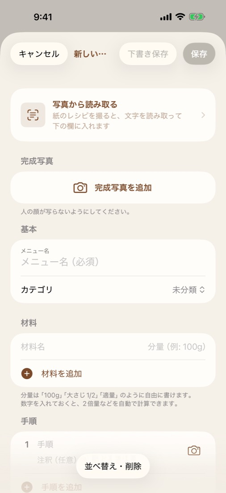
似たレシピから作る: レシピを開いて、右上の「…」→「コピーして新規作成」を押すと、材料と手順が入った状態で作り始められます。期間限定のメニューなど、少しだけ違うレシピを作るときに便利です。
直す: レシピを開いて、右上の「編集」を押します。
- 「保存」を押すと、すぐにスタッフ全員のアプリに届きます。
- 途中までのときは「下書き保存」。下書きは管理タブの「下書き」にあり、一覧には出ません。
- 同じレシピをほかの人が先に保存していたときは、「〇〇さんが先に保存しました」と出ます。内容を見てから、もう一度直してください。
- 保存には電波が必要です。電波がないと「保存できませんでした」と出ますが、入れた内容は残っているので、電波のあるところでもう一度「保存」を押してください。
しまう・消す: 「…」→「アーカイブへ移す」で一覧から隠せます（期間限定が終わったメニューなど）。「削除」はゴミ箱に移すだけで、30日以内なら元に戻せます。
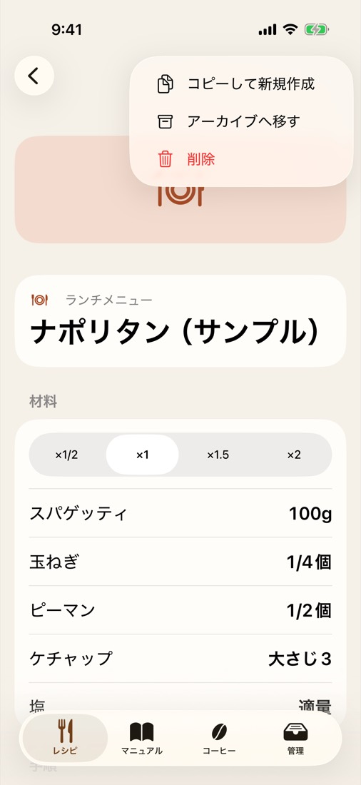
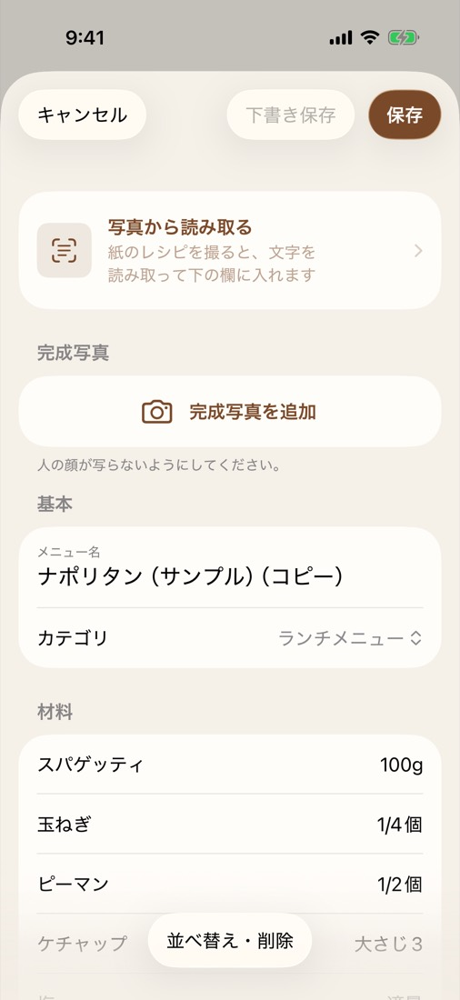
マニュアル
お店の作業の手順をまとめたものです。グループ（立ち上げ作業・営業中・締め作業など）ごとに並んでいます。
探し方・見かた・作り方は、レシピとほとんど同じです。検索では、タイトルと手順の文の両方から探せます。
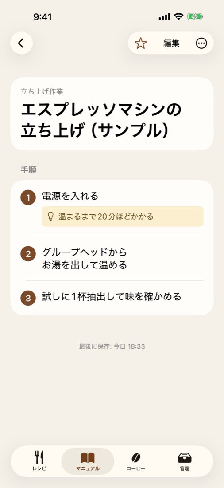
コーヒー
「淹れ方」「豆」「基礎知識」の3つに分かれています。行を押すと中が開きます。開いたままにしておくと、次に開いたときも開いたままです。
- 淹れ方: ハンドドリップ・エスプレッソなどの手順とお店の数字
- 豆: 豆ごとの焙煎度・味のカード
- 基礎知識: 豆の保存や挽き方などの知識
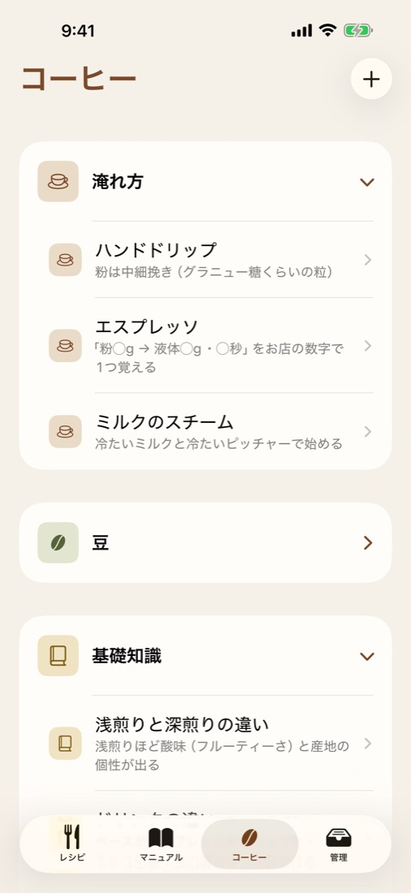
管理
- ニックネーム: 自分のニックネームを直せます。
- 最後に更新: 押すと、今すぐ最新の内容を読み込みます。
- 下書き: 「下書き保存」したレシピ・マニュアル。
- アーカイブ: 一覧から隠したもの。「一覧に戻す」で元に戻せます。
- カテゴリ・グループの管理: 追加・名前や色の変更・並べ替え。
- ゴミ箱: 削除したもの。30日たつと完全に消えます。
- 要望・お問い合わせ（いちばん下）: 困ったこと・ほしい機能を送れます。
「見るだけの人」には、整理のための項目は出ません。
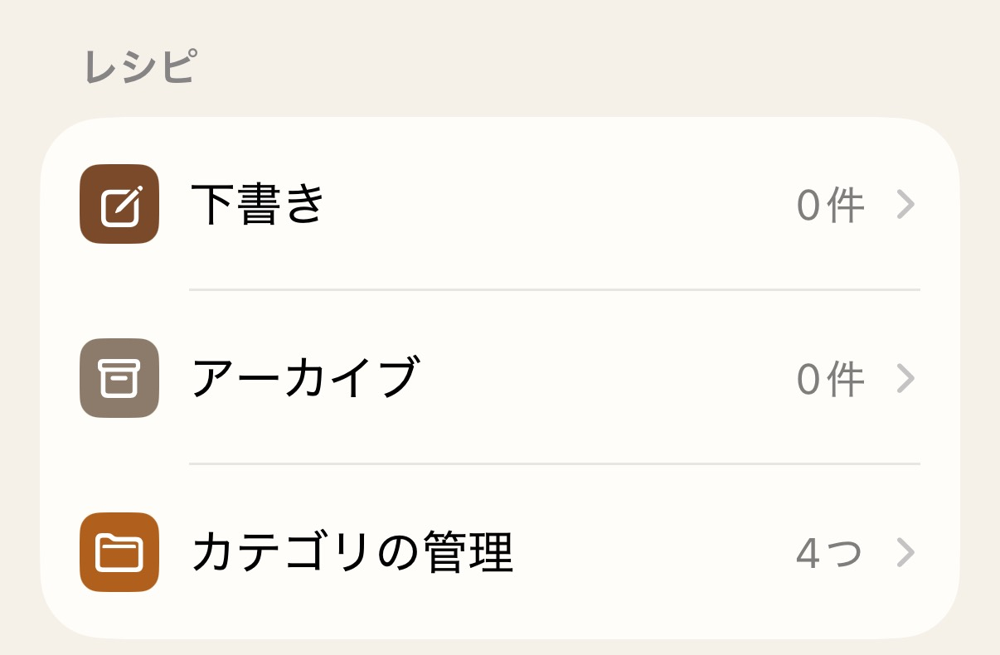
便利な使い方（Tips）
ボタンが見えていないけれど、知っておくと便利な操作です。
- 長押しして動かすと、順番を変えられる
- 作成・編集画面の材料と手順は、行を長押ししたまま上下に動かすと並べ替えられます。下の「並べ替え・削除」を押してから、右のつまみで動かすこともできます。
- 左にスワイプすると、行を消せる
- 作成・編集画面の材料・手順の行は、左にスワイプすると「削除」が出ます。写真から読み取ったあとの、いらない行も同じように消せます。
- 一覧で長押しすると、すぐお気に入りに入れられる
- レシピやマニュアルの一覧で行を長押しすると、開かずに「お気に入りに追加」できます。レシピなら「コピーして新規作成」も出ます。
- 材料名はキーボードの上から選べる
- 材料名を入れているとき、キーボードのすぐ上に、よく使う材料名が出ます。押すとそのまま入り、分量の欄に移ります。分量の欄では「g」「ml」「大さじ」などの単位のボタンが出ます。数字以外を書きたいときは「文字で入力」を押すと、ふつうのキーボードに変わります。
- 材料名の欄で改行のキーを押すと、分量の欄へ
- キーボードの右下の「次へ」を押すと、同じ行の分量の欄に移ります。
- 作成画面を下にスワイプして閉じても、続きが残る
- 作っている途中で画面を下にスワイプして閉じても、もう一度開くと続きから書けます（アプリを終了するまで）。とっておきたいときは「下書き保存」を押してください。
- 写真を押すと、大きく見られる
- レシピ・マニュアル・コーヒーの写真や手順の写真は、押すと画面いっぱいに出ます。
- 一覧を下に引っ張ると、最新になる
- ほかの人が直したばかりのレシピがまだ出ていないときは、一覧を下に引っ張ってください。管理タブの「最後に更新」を押しても読み込めます。
- 下書き・アーカイブ・ゴミ箱もスワイプで
- 下書きの一覧では、左にスワイプで削除。アーカイブでは、左にスワイプで「一覧に戻す」。ゴミ箱では、右にスワイプで「元に戻す」、左にスワイプで「完全に削除」です。
- 調理モードは左右にスワイプで進む
- 手がふさがっているときは、画面を左右にさっとなでるだけで、次の手順・前の手順に移れます。
困ったとき
- 電波がないところで使えますか？
- 一度読み込んだ内容は見られます。作ったり直したりして保存するときは、電波が必要です。
- iPhone を買い替えました。
- 同じ Apple ID で iCloud にサインインしていれば、アプリを入れ直すだけでそのまま使えます。もう一度申請しなくて大丈夫です。
- 間違えて消してしまいました。
- 管理タブの「ゴミ箱」から、30日以内なら元に戻せます。
- ほかにも困ったことがあります。
- サポートのよくある質問を見るか、アプリの管理タブの「要望・お問い合わせ」から送ってください。